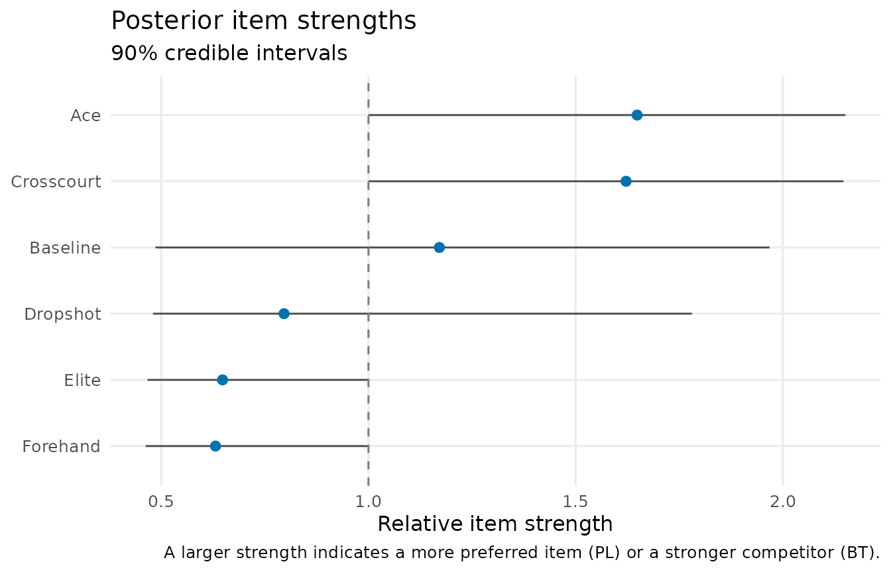
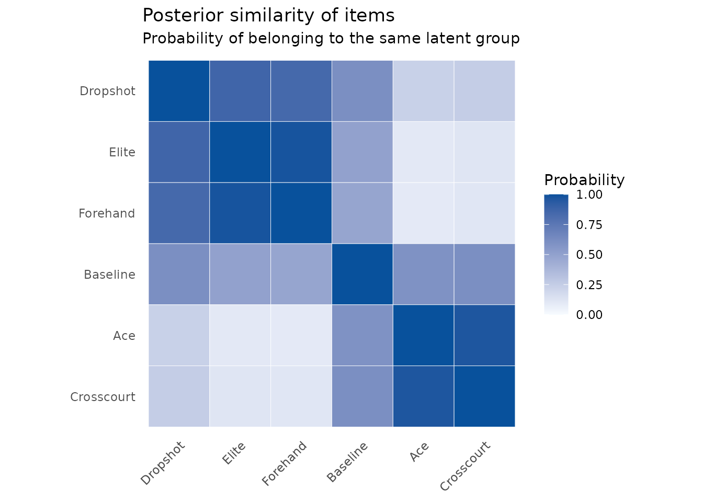
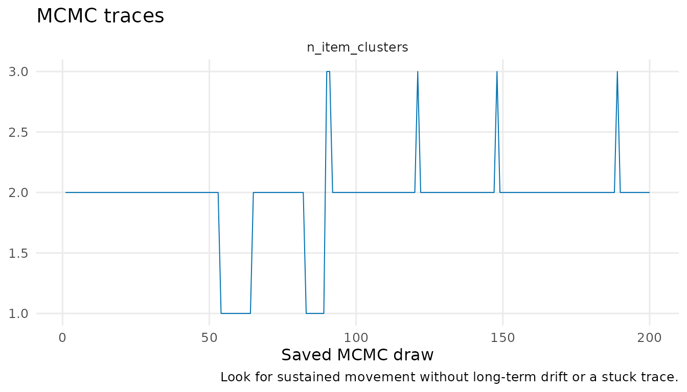

Getting started: from results to a Bradley--Terry analysis
Source:vignettes/getting-started.Rmd
getting-started.RmdWhat this package does
BTSBM analyses two kinds of preference data:
- Pairwise results: one item wins or loses against another, such as a match in a league.
- Rankings: a person places several items from most to least preferred.
This first tutorial uses pairwise results. The ranking tutorial is vignette(“pl-ranking-models”).
A Bradley–Terry (BT) model assigns every player a positive strength. A larger strength means a greater probability of winning against a player with a smaller strength. A BT–SBM additionally lets the data group players with similar strengths into latent tiers.
1. Start with data you can inspect
The toy tennis league is synthetic and intentionally small. wins[i, j] means the number of times player i beat player j. The diagonal is zero because a player does not play themself.
tennis <- tennis_toy(matches_per_pair = 8, seed = 1)
tennis$wins
#> Ace Baseline Crosscourt Dropshot Elite Forehand
#> Ace 0 5 6 6 5 8
#> Baseline 3 0 3 3 6 6
#> Crosscourt 2 5 0 6 7 7
#> Dropshot 2 5 2 0 4 6
#> Elite 3 2 1 4 0 4
#> Forehand 0 2 1 2 4 0Before fitting a model, inspect the observed outcomes. Darker cells identify frequent wins by the row player over the column player.
plot_pairwise_outcomes(tennis)
This plot is descriptive: it does not yet account for uncertainty or combine all opponents into one estimate of player strength.
2. Choose a model
Start with a BT–SBM when you think players may form broad tiers rather than a completely reliable order from first to last. Here, the Gnedin prior lets the number of tiers be learned from the data.
model <- bt_sbm_model(
latent_strength = latent_strength(shape = 4, rate = exp(digamma(4))),
item_clustering = gnedin_prior(gnedin_hyperparameter = 0.5)
)
model
#> <btsbm_model> Bradley--Terry with latent item clustering
#> latent strength: Gamma(shape = 4 , rate = 3.511761 )
#> item clustering:<clustering_prior> Gnedin(gnedin_hyperparameter = 0.5)The latent_strength() prior must be positive. item_clustering is a prior over possible player tiers. You can use finite_partition(max_clusters = 3) when a strict upper limit is scientifically justified.
3. Fit the model
An MCMC fit produces many plausible values rather than one single answer. warmup draws are discarded; the remaining draws represent posterior uncertainty. The short chain below is suitable for a tutorial. Use longer, multiple chains in a real study.
fit <- fit_btsbm(
tennis,
model,
mcmc_control(iter = 400, warmup = 200, seed = 2)
)
fit
#> <btsbm_fit> bt / item_sbm with 200 saved draws4. Read the main result: strengths and uncertainty
The point is the posterior mean strength. The horizontal line is a 90% credible interval: it describes the remaining uncertainty after seeing the results. Intervals that overlap substantially should not be read as a certain ordering.

The same information is available as a table, which is useful for reporting.
strength_summary(fit)
#> item mean median lower upper
#> 1 Ace 1.6482758 1.6820440 1.0000000 2.150828
#> 3 Crosscourt 1.6215289 1.6737805 1.0000000 2.146159
#> 2 Baseline 1.1710874 1.2384788 0.4858528 1.967910
#> 4 Dropshot 0.7962691 0.6177404 0.4798787 1.780272
#> 5 Elite 0.6479440 0.5967778 0.4668456 1.000000
#> 6 Forehand 0.6309056 0.5936463 0.4623794 1.0000005. Ask whether the data support tiers
The model’s cluster labels can switch their names from one MCMC draw to the next. Instead, use a posterior similarity plot. A dark cell means the two players were frequently placed in the same tier.
plot_posterior_similarity(fit, target = "item")
6. Check the sampler before interpreting it
MCMC draws should move around a stable region. Trace plots are a quick screening tool: long trends or a completely stuck trace are reasons to run longer chains or reconsider the model.
plot_mcmc_traces(fit)
mcmc_diagnostics(fit)
#> quantity mean sd ess mcse autocorrelation_lag_1
#> 1 n_item_clusters 1.935 0.333664 33.87867 0.05732528 0.6839837